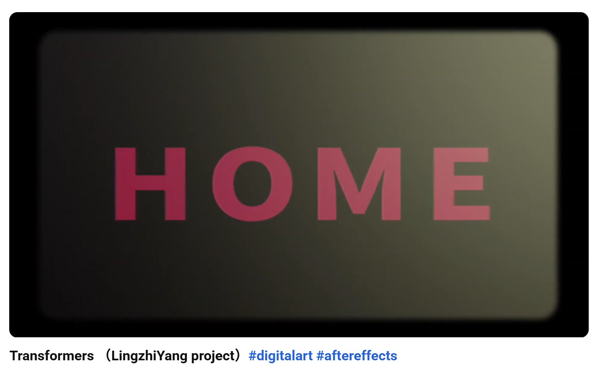

Interactive Project
Portfolio Website System
A coded style guide that translates editorial aesthetics into reusable web components.
HTML
CSS
Portfolio
INTERACTIVE ARTS / DIGITAL STORYTELLING / VISUAL DESIGN
About Me
Lingzhi Yang is a digital artist from Shanghai, currently studying at Simon Fraser University's School of Interactive Arts and Technology (SIAT).
With a profound passion for storytelling and visual innovation, Lingzhi brings ideas to life through a diverse skill set in Adobe Photoshop, After Effects, and Premiere Pro.
His work effortlessly combines artistic creativity and technical expertise, resulting in visually stunning animations, professional-grade video edits, and captivating image designs.
In addition to visual media, Lingzhi is experienced in 3D modeling and design, using tools such as Onshape and Rhino to explore form, structure, and spatial thinking.
He also designs user interfaces in Figma and brings them to life using HTML and CSS, enabling him to build clean, functional, and visually consistent web experiences.
Furthermore, Lingzhi's proficiency in Java and Python empowers him to integrate cutting-edge technology seamlessly into his projects.
Driven by endless curiosity and a relentless pursuit of creativity, Lingzhi continuously explores new ways to blend art and technology, crafting digital experiences that resonate deeply with audiences.
01
#f3f1ec
#111111
#79d3cf
#2f84c6
#c96aa0
#9a8a2f
#b8bb17
#e85c1a
#4d3c96
02
Display
Heading
Body
This style guide uses strong hierarchy, editorial spacing, and vivid accent colors to present web and game projects in a memorable way.
03
Interactive Project
A coded style guide that translates editorial aesthetics into reusable web components.
04
Use a two-column hero and spacious vertical rhythm.
Keep most surfaces neutral and reserve saturated color for emphasis.
Large display type, bold navigation, and compact supporting text.
Mix playful color blocking with structured editorial composition.
05
06

Project 01
Cyber City Farm is an interactive Java game that combines farming simulation with action-based gameplay. In this project, the player takes care of a rabbit by planting seeds, growing carrots, harvesting crops, and feeding the rabbit, while also defending it from attacking robots. The game includes multiple states, character interactions, sound effects, animation, and a survival timer to create a more engaging experience.

Project 02
This project is a dynamic text animation inspired by Optimus Prime's iconic lines from Transformers. I used Adobe After Effects as the main tool and explored motion, pacing, and visual rhythm through animated typography. Additional tools such as Premiere Pro, Photoshop, PowerPoint, and Meitu supported the editing and visual development process.